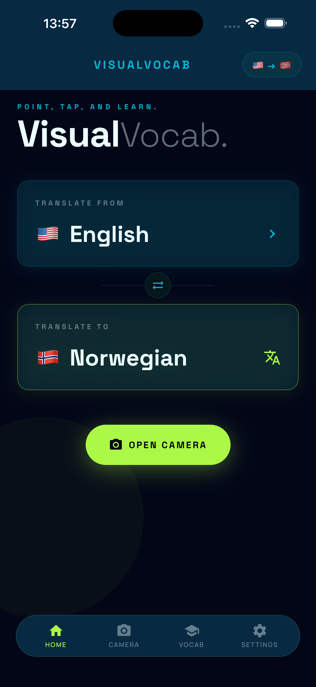
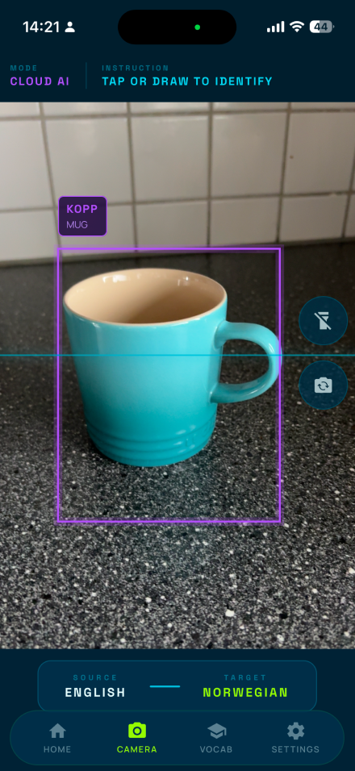
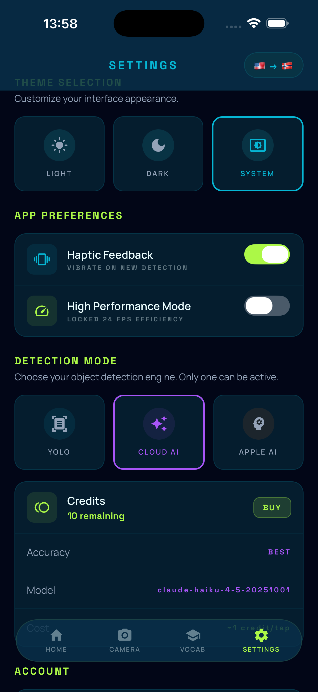
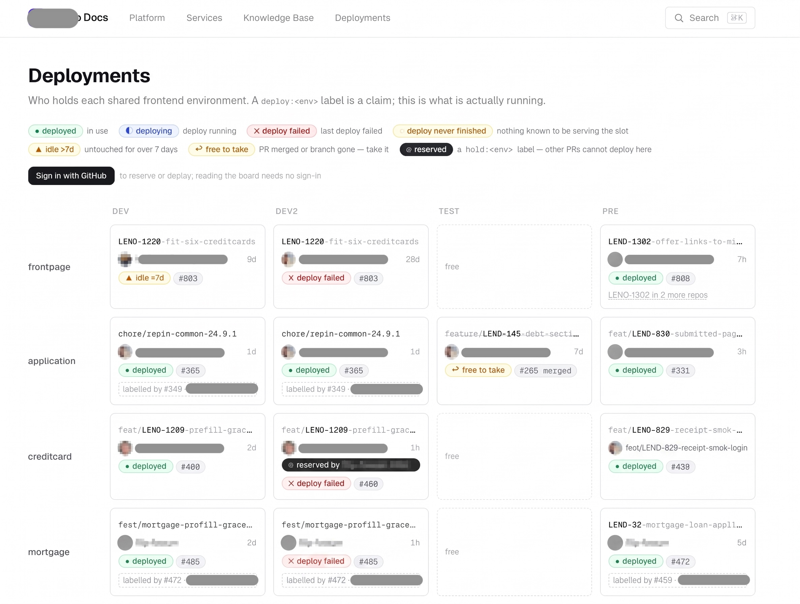

Sajan Sainju · Full-stack developer
github.com/sainjusajan
Three projects, different scales.
| Project | What it is | Role | Stack |
|---|---|---|---|
| VisualVocab | iOS app — point your camera at an object, learn its name in 11 languages | Solo, end to end | React Native, TypeScript, Swift, Supabase, Nuxt |
| lendocli | CLI for AWS, GitHub Enterprise and deploys | Contributor (team tool) | Go, AWS SDK, GoReleaser |
| Deployment tracker | Board showing who holds each shared frontend environment | Solo, internal | GitHub API, GitHub Pages, OAuth |
iOS language-learning app. Point, tap, and learn.



Three ways to identify an object, each a different trade-off.
Everything from the model to the App Store listing.
Go CLI for AWS, GitHub Enterprise and deploys. A team tool — a colleague built the core.
Connecting to a dev database used to take six manual steps across the AWS console, the CLI and two wiki pages — and usually failed the first time on the wrong account.
Who is holding each shared frontend environment, right now.
Four shared environments, several repos, everyone's branch wants one. The question got asked in chat several times a day — and people deployed over each other's work.
hold:<env> label reserves a slot when someone does know better
What I used across these projects.
| Frontend | TypeScript, React 19, React Native, Expo, Vue 3, Nuxt 4, Tailwind, Zustand, Skia, Reanimated |
| Backend & data | PostgreSQL, Supabase, Row Level Security, PL/pgSQL, Deno edge functions, Go |
| Auth & payments | OAuth / PKCE, Apple Sign-In, Google Sign-In, StoreKit in-app purchases |
| ML & native | TensorFlow Lite, YOLO, Swift, Objective-C, Apple Vision, Foundation Models, Anthropic Claude |
| Infra & delivery | GitHub Actions, EAS Build, Cloudflare Pages, GitHub Pages, GoReleaser, AWS (SSO, RDS, EKS, SSM) |
Happy to go deeper on any of it.
Sajan Sainju · github.com/sainjusajan